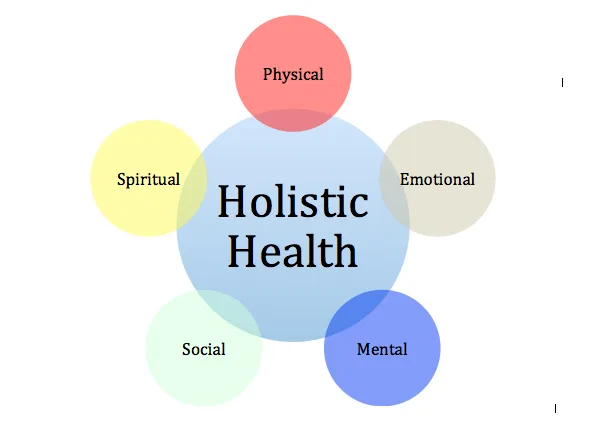
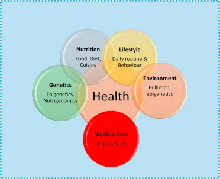

Expanded Nursing Uganda Explanation
Determinants of Health should be understood beyond a short definition. Link the concept to patient history, focused assessment, common risks, nursing priorities, documentation and evaluation of outcomes.
Contents, 15 sections (tap to expand)
01 Topic: Introduction to Personal and Communal Health
This section introduces the foundational concepts and terminology essential for understanding both individual (personal) and population-level (communal) health.
02 Concepts of Personal and Communal Health (Definitions)
Understanding these key terms is the first step in studying PCH.
- Health: This is a state of complete physical, mental, and social well-being of an individual and not merely the absence of disease or disability.
- Hygiene: This is the practice of keeping oneself, one’s way of living and working areas clean in order to prevent disease. OR, The study of health that teaches people how to keep their bodies healthy especially through the promotion of cleanliness. OR, Is the study of health as it does concerns each individual.
- Personal Hygiene: This deals with the health of the individuals and involves understanding and care of both the body and minds. It is a science of health that deals with those measures taken by an individual to preserve his/her health. Examples of those measures include: Cleanliness
- The bowels
- Exercise, rest and recreation
- Fresh air and sun light
- Good habits
- Good diet
- Clothing
- Cleanliness of an individual and care of the body
- Regulation of daily life activities to maintain physical fitness
- Habits of mental outlook
- Public or Societal Hygiene (or Community Health): This deals with the health of the community and is the responsibility of the community and of both central and local government. It’s an art and science of taking care of health in all its aspects of life which include: Promotion
- Preservation and prevention of diseases
- Family[s]: Is a group of two or more people [home] who are united by blood, marriage, adoption and commitment which exist as a family and who are mixed together as a unity.
- Community: Is a group of people who live in a specific place or locality sharing common interest and characteristics. It’s a group of living together having the same values, culture and norms with an intension or target goal.
- Epidemiology: The study of the distribution and determinants of health-related states or events (including disease) and the study to control diseases and other health problems. OR, The study of the patterns, causes, and effects of health and disease conditions in defined populations.
- Mortality: Mortality is used only to refer to a situation where people in a population are dying because of a disease.
- Mortality Rate: Describes the number of people dying because of a disease in a population.
- Morbidity: Morbidity is a state of having poor health or a disease because of any reason. Whenever a person is afflicted with a disease to a level that it affects his health, the word morbidity is used by doctors.
- Morbidity Rate: Is referred to the rate of incidence of a disease or the prevalence of the disease in a certain population.
- Prevalence: Refers to the number of people who already have the disease.
- Incidence: Refers to the number of new cases of a disease that are confirmed.
- Communal: This involves a large group of people.
03 Aims of Hygiene
- To keep the body healthy and give one confidence
- To prevent spread of germs to other people and prevent illness
- To promote a good standard of living
04 Personal and Communal Health (P.C.H)
This is the health care system that concerns itself with the health of an individual and the community.
05 Aims of Personal and Communal Health (P.C.H)
- To provide, promote, preventive, curative and rehabilitative health care to individual and community as a whole, i.e., bringing them to a complete physical, mental and social well-being.
- Provide nurses with knowledge and skills of maintaining an individual health through health education.
- Health being a basic of human right which should be attainable at higher level. This helps nurses to work without discrimination. All should be treated equally.
- It helps nurses to overcome the challenges that may arise during counseling or advising patients, relatives and community members.
- Helps nurses to provide good care to patients who are unable to perform since they know the importance.
06 How Can We Promote Good Health?
- Through health education, e.g., clean water, sanitation.
- Residing in good houses.
- Good nutrition.
- Immunization.
- Having good relationship with the community.
- Proper planning by the government [MOH].
- Emphasis on environmental hygiene.
07 Components of P.C.H
- General health measures.
- Food hygiene.
- Clean water supply.
- Environmental sanitation [waste disposal].
- Good housing.
- Vector control.
- Treatment of infections and other diseases.
08 P.C.H as a Subject
This subject includes all matters which affect the health of people either an individual in their own homes or as members of the community such as villages or towns.
This subject can be sub-divided into:
- Personal hygiene.
- Public or community or social hygiene.
09 Dimensions of Health
Overall health and wellness are interdependent on several dimensions. For a person to be considered truly "healthy," all these dimensions should be in balance.
- Physical Health: The state where all body parts are anatomically intact and performing their physiological functions correctly. It implies the absence of disease or pathology and the body's ability to cope with everyday stresses.
- Mental Health: Relates to cognitive abilities and well-being. It includes the ability to think clearly, reason, make judgments, perceive things as they are, and understand social structures.
- Emotional Health: The ability to recognize, express, and regulate emotions appropriately in response to stimuli. It involves showing appropriate reactions and managing feelings effectively.
- Social Health: The ability to form satisfying interpersonal relationships with others. This involves effective communication, building networks, and understanding and accepting diverse cultures.
- Spiritual Health: Relates to a person's sense of purpose and meaning in life. It is the vital force or spirit that animates humans; an imbalance here can affect overall well-being.
10 Determinants of Health
A person's health is determined by their circumstances and environment. These factors, known as determinants, can either protect and improve health or create risks.
- Income and Social Status: Higher income and social status are linked to better health. Greater economic stability allows for better access to nutrition, housing, and healthcare.
- Education Level: Low education levels are often linked with poorer health, more stress, and lower self-confidence. Education equips people with the knowledge to make healthier choices and access better employment.
- The Physical Environment: This includes the safety of water, housing conditions, air quality, and working conditions. A clean and safe physical environment reduces exposure to diseases and hazards.
- Health Service Access: The availability and accessibility of quality health services for prevention, diagnosis, and treatment directly impact the health of individuals and communities.
- Other determinants include: Personal health practices and coping skills, healthy child development, social support networks, and genetics.
11 Health Indicators
Health indicators, also referred to as health variables or health indices, are measurable characteristics of a population that provide insights into its health status. These indicators serve several essential roles in the realm of healthcare management, including description, prediction, explanation, system oversight, evaluation, advocacy, accountability, research, and the assessment of gender disparities.
Health indicators are typically classified into two main categories: vital indicators and behavioral indicators.
These encompass a wide range of measures that provide critical information about the health of a population. Some key types of vital health indicators include:
- Mortality Indicators: These indicators focus on data related to deaths within a population. They include statistics such as the crude death rate (the total number of deaths per 1,000 people in a given year) and specific death rates for various causes (e.g., cardiovascular disease, cancer).
- Morbidity Indicators: Morbidity indicators provide insights into the prevalence and incidence of diseases and illnesses within a population. Examples include the prevalence of diabetes or the incidence of new cases of tuberculosis.
- Disability Indicators: These indicators assess the prevalence of disabilities, impairments, and limitations in functioning within the population.
- Service Indicators: Service indicators gauge the accessibility, availability, and quality of healthcare services. This category includes measures like the number of healthcare facilities per capita or the availability of essential medications.
- Comprehensive Indicators: Comprehensive indicators offer a more holistic view of health by combining multiple aspects of well-being. They may include the Human Development Index (HDI), which factors in life expectancy, education, and income.
- Growth Rates: These indicators track changes in population size over time, which can impact healthcare resource planning and allocation.
- Fertility Rates: Fertility indicators, such as the total fertility rate (TFR), provide information about the average number of children born to women of childbearing age in a population.
- Couple Protection Rates: These rates evaluate the use and effectiveness of family planning methods among couples.
- Birth Rates: Birth rates indicate the number of live births per 1,000 people in a specific population during a given year.
In contrast to vital indicators, behavioral health indicators focus on the actions, behaviors, and attitudes of individuals and communities regarding healthcare. Some examples of behavioral health indicators include:
- Utilization of Services: These indicators measure the extent to which healthcare services are accessed by the population, including factors like hospital admissions, doctor visits, and preventive screenings.
- Compliance Rates: Compliance indicators assess the adherence of individuals to recommended treatments, medications, and health guidelines.
- Population Attitudes: Behavioral indicators also encompass surveys and data related to public perceptions and attitudes regarding health and healthcare facilities.
- In your own words, explain the WHO's definition of health . Why is it more than just "not being sick"?
- What is the difference between personal hygiene and community health ?
- List and briefly describe the five dimensions of health .
- Name three determinants of health and give an example of how each one can impact an individual's well-being.
- What is epidemiology and why is it important in community health?
The following reference materials are recommended for this module unit.
- Rahim, A. (2017). Principles and practices of community medicine. 2nd Edition. JAYPEE Brothers Medical Publishers Ltd. New Delhi
- Cherie Rector, (2017), Community & Public Health Nursing: Promoting The Public's Health 9e Lippincott Williams and Wilkins
- Gail A. Harkness, Rosanna Demarco (2016) Community and Public Health Nursing 2nd edition, Lippincott Williams and Wilkins
- Basavanthapp, B.T and Vasundhra, M.K (2008), Community Health Nursing, 2nd edition. JAYPEE Brothers Medical Publishers Ltd. New Delhi
- Kamalam, S. (2017), Essentails in Community Health Nursing Practice 3rd edition. JAYPEE Brothers Publishers Ltd. New Delhi
- James F. McKenzie, PhD, et al. (2018) An Introduction to Community & Public Health, 9th edition, Jones and Bartlett Publishers.
- Maurer, F.A, Smith, C.M (2005), Community /Public health Nursing Practice, 3rd edition ELSEVIER SAUNDERS, USA
- МОН, (2013) Occupational Safety and Health Training Manual, 1st Edition
12 Nursing Uganda Clinical Lens
Use Concepts of personal and communal health as a practical nursing topic, not only a memorized definition. Link cause, transmission, incubation, clinical features, treatment support and prevention.
- What to understand first: define concepts of personal and communal health, identify the normal or expected pattern, then explain what changes when the patient is unwell.
- Why it matters in care: the nurse must recognize risk early, explain findings clearly, document accurately and know when to escalate.
- How to revise it: connect each point to assessment, nursing diagnosis or care problem, intervention, rationale and evaluation.
13 Assessment Guide
- Temperature, pulse, respiratory status, hydration, pain, rash, wounds, stool, urine or sputum changes.
- Exposure history, travel, contacts, vaccination status and comorbidities.
- Specimen orders, isolation needs, antimicrobial history and danger signs.
14 Nursing Priorities, Rationales and Outcomes
- Use standard precautions and transmission-based precautions where needed.
- Support hydration, nutrition, medicines, monitoring and early referral for severe disease.
- Teach prevention, adherence, hygiene, safe water, vector control or contact tracing as relevant.
The rationale for these priorities is patient safety: nursing actions should prevent deterioration, reduce discomfort, support recovery and create clear evidence for the next caregiver.
- Expected outcome: Symptoms improve, complications are detected early, transmission risk is reduced and treatment is completed correctly.
15 Patient Teaching and Revision Check
- Explain concepts of personal and communal health in simple language the patient or caregiver can repeat back.
- Teach warning signs, medicine or follow-up instructions, hygiene or lifestyle points where relevant.
- For exams, prepare a short answer using: definition, causes or risk factors, signs, assessment, management, complications and prevention.
- For ward practice, document baseline findings, actions taken, patient response and the plan for review.
Illustrations and Diagrams (8)




Related Video Lectures
Watch nursing lecture videos on YouTube for this topic. Opens in a new tab.
Watch on YouTubeExternal link: YouTube may use its own cookies and terms. Nursing Uganda is not affiliated with YouTube.